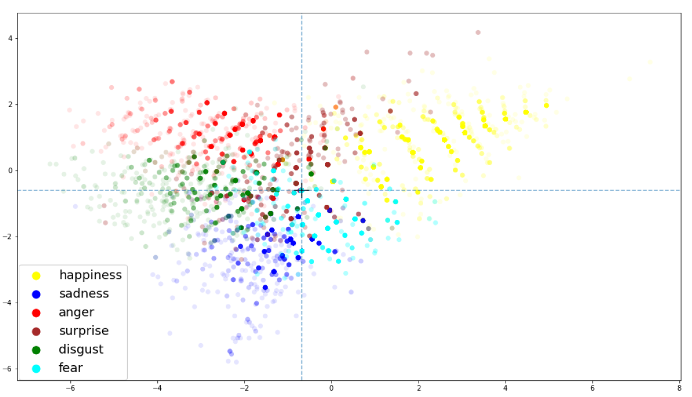
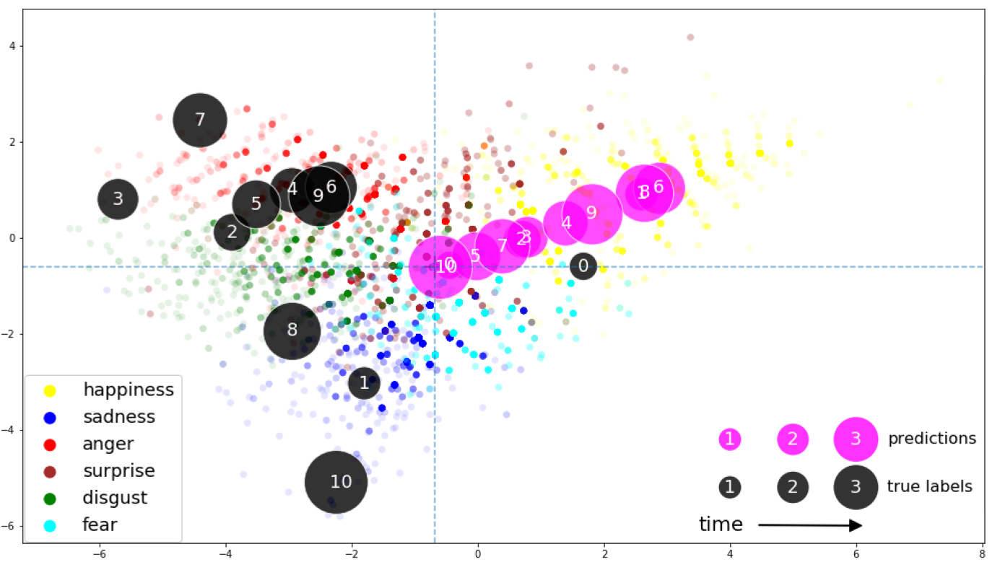

Project description
The research aimed at improving understanding of multimodal emotion recognition models by introducing a framework for visualizing non-temporal and temporal outputs of models predicting multiple related values for each data entry.
Overview
Various emotion recognition models are being introduced with the rise of powerful Machine Learning, computational power, and data sources. Most of them rely on Paul Ekman’s concept of 6 basic emotions, thus predict 6 values in parallel to describe single emotional state.This, together with data being merged from different modalities, makes interpreting the results a challenge and opens up opportunities for introducing better visualization techniques that could enable deeper insights, better understanding of the inner workings of machine learning, and ultimately better models.
Our work introduces a concept called emotion space, and overlays temporal information over that space, allowing for comparison between models and modality-dependent data sources. We present our results for training KNN and LSTM models on the CMU MOSEI dataset and a dataset exploring emotion in music.
The project was developed for a Cognitive Science course.
Technologies
Python, Parametric t-SNE, Keras, Sklearn, PlotlyTechnical Details
The emotion space is created using Parametric t-SNE by embedding the 6-dimensional emotional state into a 2-dimensional space. It represents relationships between the emotions as understand through the prism of training data, grouping similar emotions together and e.g. placing sadness and happiness on one axis where high sadness and high happiness never coincide. Emotion Space
The crucial point is the use of Parametric t-SNE instead of classical t-SNE. Given that we’ve trained a network that maps training data successfully from 6-, to 2-dimensional space, we can then map any unseen data point into that space again later, visualizing for example predictions of a model trying to learn multimodal emotion recognition task. LSTM minimizing MSE by distinguishing only between happy and not-happy
An example could be an LSTM model that produced better MAE than KNN, yet after visualizing the results we could see that it only learned to differentiate between happy and sad.For more information, the full report is available HERE